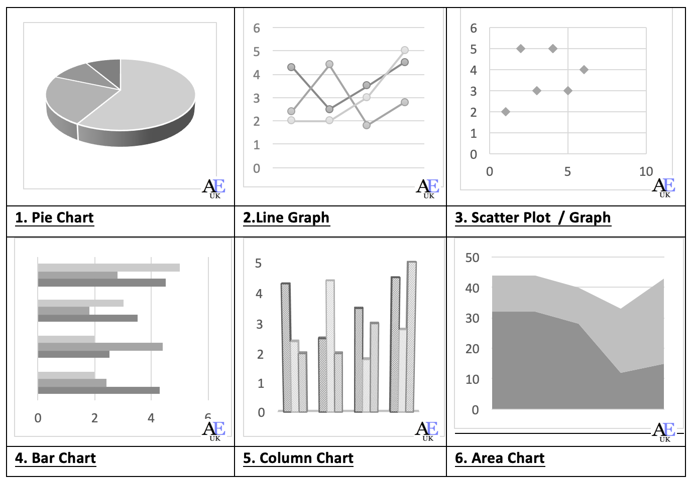
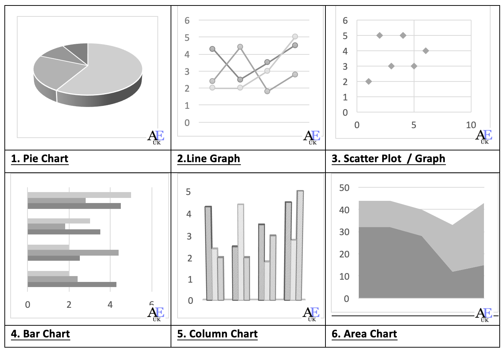

What's The Scoop!
27... Colts win 3 three in a row
20... Buccaneers
There are Colts Fans Around the World
Find them on your favorite media sites
Why Colts By Numbers?
2... reasons why I started this project.
Use the Python
computer language and track Colts football.
Pro Football
Resource is a great source for stats . Players, teams, offense,
defense and rankings.
I built the web UI in Angular Material
with Flex and responsive design.
 

We take game stats and store them. Run some cool Python code using
AI with statistical math calculations.
Display the results in awesome visuals and share them with
Colts fans.